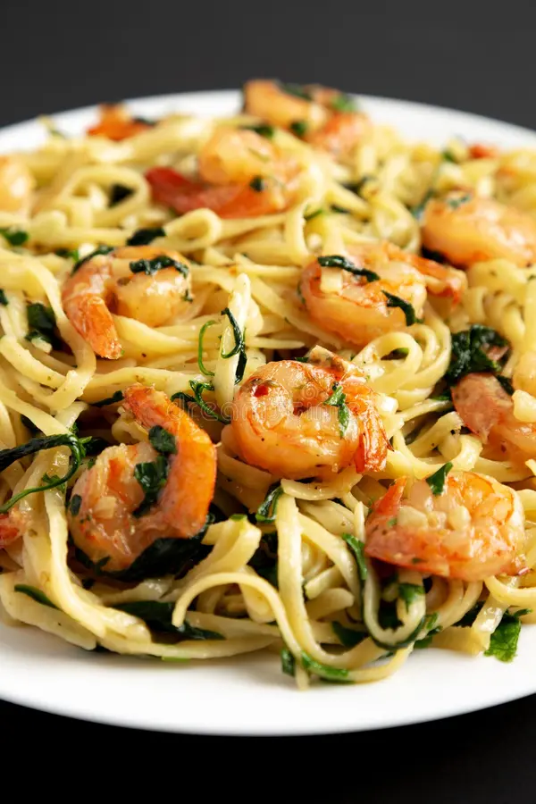

Lets talk about about some of the most savory foods known to man. we weill try all foods galore and , and give you a feed bavk right here for you to make your own view.
With a wide vairety and world changing foods to try, we will make sure the tatste , texture, smell, and placement, is all appesing and most imporantaly b does it leasve a savory tatste!
This savory bacon burger is made with 100% beef, topped with crispy bacon,pickles, sweet red onions melted cheddar cheese, fresh lettuce, tomato, and our special savory sauce. Served on a toasted brioche bun, this burger is a flavor explosion in every bite!

This savory garlic shrimp pasta features succulent shrimp sautéed in a savory garlic butter sauce, tossed with al dente pasta , cherry tomatoes, and fresh basil. Finished with a sprinkle of Parmesan cheese, this dish is a savory delight that will leave you craving more!
This savory chocolate lava cake is a decadent dessert made with rich dark chocolate, and a gooey molten center. Served warm with a scoop of vanilla ice cream and a drizzle of caramel sauce, this dessert is the perfect way to end your savory food adventure!

| Food | Rating | Emoji |
|---|---|---|
| Bacon Cheeseburger | 9/10 | 🍔 |
| Garlic Shrimp Pasta | 8/10 | 🍤 |
| Chocolate Lava Cake | 10/10 | 🍫 |
| Cheddar Cheese | 8/10 | 🧀 |
| Bacon | 9/10 | 🥓 |